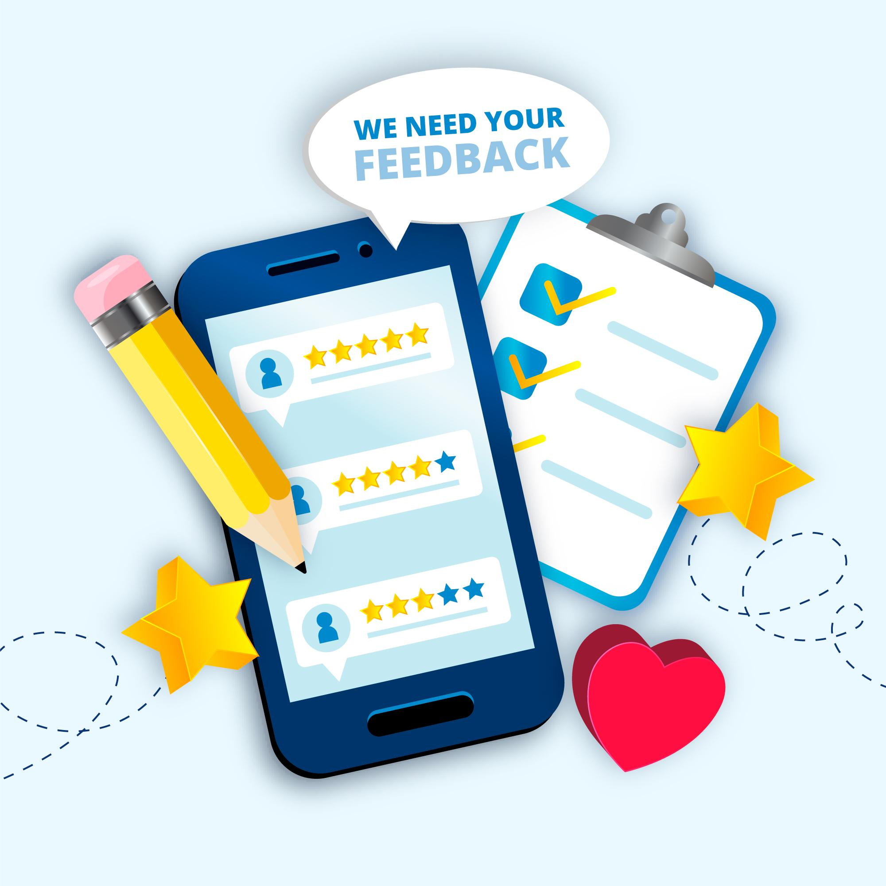

Why Choose ZERA?

Authentic Reviews
Real voices sharing honest experiences, helping brands grow.

Earn Rewards
Review and earn—simple, engaging, and rewarding.
Vibrant Community
Connect with others shaping product experiences globally.